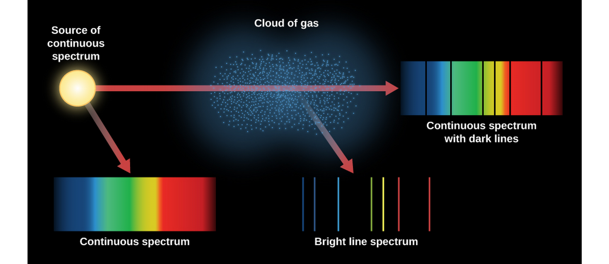

ASTR101 Ch 5-6
Ch 5 - Radiation and Spectra
The Behavior of Light
Basics
- Radiation in our context is light, which radiates outwards—though in other contexts it describes subatomic particles released in atomic processes.
- Our radiation (light, in this course) is also generated at the atomic level.
Maxwell's Theory of Electromagnetism
- Each atom is made up of protons (positive charge), neutrons (no charge), and electrons (negative charge).
- The neutrons and protons are in a tiny nucleus, while the electron is generally around it.
- Electricity and Magnetism - electric force is due to stationary charged particles interacting, while magnetic force is due to moving charged particles interacting (among other things).
- We can talk about the field that a charged distribution exerts as a generalization of its force on multiple objects; like the gravitational field, we call these the electric or magnetic fields; each can create the other.
- Oscillations of charged matter creates electromagnetic waves; light.
The Wave-Like Characteristics of Light
- Water and sound waves, light waves, and mediums.
- The aether.
- Speed of light.
- Wavelength λ is the horizontal length covered by one cycle, frequency f the number of cycles that pass per second (measured in 1/s, or Hertz; Hz). The wave speed is denoted \[v=f\lambda.\] For light in a vacuum, the velocity is given by \(v=c\).
Light as a Photon
- Light sometimes behaves like a particle would; we term the equivalent light "particle", a photon.
- This particle-wave duality is studied in Quantum Mechanics and Quantum Optics.
- The wave and photon models of light are simplifications of the quantum model which describes both.
Propagation of Light
- By how much does the area increase if we double the radius?
- As distance from the bright object increases by factor s, radiation concentration decreases by 1/s2; this is the inverse square law.

The Electromagnetic Spectrum


Types of Electromagnetic Radiation
- Gamma rays are high energy, short wavelength rays dangerous to living tissue. Generated deep inside stars and absorbed by atmosphere.
- X-rays are energetic and penetrate tissue but not bone (hence their use), blocked by atmosphere.
- Ultraviolet (UV) is higher energy than violet light; also called "black light"; mostly blocked by atmosphere, causes sunburn, cancer in overexposure.
- Visible light, ROY G BIV—mostly passes through atmosphere if not cloudy.
- Infrared radiation is absorbed by water and carbon dioxide, but somewhat penetrates atmosphere.
- Microwave, used in short-range communication and microwave ovens, are absorbed by water vapor.
- Radio waves include radar and AM (which reflects inside ionosphere).
- The visible universe is only one small portion of Astronomy, which includes radio astronomy, astronomy examining infrared, x-ray, etc.
Radiation and Temperature
- Astronomical objects can emit mostly one band of wavelengths, depending on temperature.
- Radiation source is atomic in nature. Particles vibrating rapidly (high temperature) emit higher energy waves in general.
Radiation Laws
- Blackbody: object that doesn't reflect or scatter any radiation (an idealization useful for theory); it absorbs radiation, gets hot, and its atoms release radiation from the heat.

- Note that radiation is emitted at all wavelengths, due to distribution of temperatures.
- Stefan-Boltzmann Law: A hotter object emits more total power than a cooler one. With \(\sigma=5.67\times10^{-8}\), the energy flux F–or power emitted per square meter—is given by \[F=\sigma{}T^4\]
- Wien's Law: The higher the temperature, the shorter the peak energy wavelength. \[\lambda_{max}=\frac{(3\times10^6 nm\cdot{}K)}{T}.\]
- These criteria give us a "star thermometer"—if we can measure the emitted light distribution, we can make inferences about the temperature of that star!
- Heating metal: no glowing (infrared) -> dull red -> orange-red -> yellow -> blue-white. (Unrelated to "hot" and "cool" colors in Art).
- The absolute luminosity L of a star is its total power emitted in all directions. It's obtained from the energy flux (power per unit area) by multiplying by the total surface area of a sphere; \[L=4\pi{}R^{2}F=4\pi{}R^{2}\sigma{}T^4.\]
Spectroscopy in Astronomy
Properties of Light
- Reflection is light "bouncing" off of a surface, like a mirror.
- Refraction is the bending of light by materials (eg, when light goes from one medium, or material, to another).
- Optics is the study of light; one optical instrument or tool is the telescope.
- Telescopes differ from binoculars and glasses because they use curved mirrors rather than curved lenses to magnify.
White light
- White light, passed through a prism, results in a rainbow, because the refraction of light depends on the material as well as the frequency of light, in a phenomenon known as dispersion (the rays disperse).
- This results in a spectrum; an instrument used to measure the spectrum is called a spectrometer.
- White light is actually the presence of all wavelengths of light!


The Value of Stellar Spectra
- The sun's light was put through a spectrometer in 1802 by William Wollaston; he noticed that some frequencies were not present (they were black where the color would appear).
- Researchers found the same is true of light that passes through a gas of some element.
- That means the gas is not transparent to some wavelengths—it lets most colors through, but not some specific set of colors. Combining two gases would subtract both their sets of colors from the resulting spectrum, each element having its specific spectrum.
- Heated gases also emitted light in a particular set of small bands, or portions of frequencies, and these matched! Each element has its signature spectrum!
- What do you think?

Types of Spectra
- A continuous spectrum, formed by a radiating dense gas or solid, is composed of all wavelengths of light. An absorption spectrum is a series of black lines in an otherwise continuous spectrum, which gives information about what wavelengths are absorbed by a material. The emission spectrum is the opposite, it's what wavelengths are emitted by the material when it's excited.
- We can apply spectral analysis to help determine the material in a sample, or in light from a distant galaxy.
The Structure of the Atom
- What's an atom made of?
- In their natural state, atoms are electrically neutral.
- Rutherford's Gold Foil Experiment hit gold with α particles—He2+—some bounced; "as if you fired a 15-inch shell at a piece of tissue paper and it came back and hit you."
- Conclusion: nearly all mass is contained in a tight nucleus, the electrons are in motion (or they would go towards the protons).

The Atomic Nucleus
- Mass of proton is 2000 times that of electron, their charges are equal and opposite.
- Electrons "orbit" about an average radius, different for each atom.
- Elements are defined by the number of protons (1 for hydrogen, 2 for helium, etc.).
- Isotopes of an element have different numbers of neutrons.

The Bohr Atom
- Niels Bohr solves the mystery of why electrons don't collapse into nucleus: quantized orbital radii. Energy is only radiated or absorbed when an electron changes energy levels, energies corresponding to a certain orbital radius. Strange, but lays foundations for Quantum Mechanics.
- If the correct amount of energy is supplied, the electron can jump to a higher energy level. The electron can also jump down to a lower energy level, releasing energy in the form of light.
- The energy that light carries is given by its frequency \(f\) in the relationship, \[E=hf,\] where \(h=6.626\times10^{-34}\) joule-seconds (J⋅s) is Planck's constant.
Formation of Spectral Lines
- Bohr's model can explain the spectral lines of different materials!
- Based on orbital radii of atoms (based on their nuclear configuration), each atom can accept and emit a unique spectrum of light.

Energy Levels and Excitation
- Ground state is the lowest radius that an electron can orbit the nucleus.
- Excitation is when an atom absorbs energy and goes to a higher energy level. After excitation, it may relax back to its original state, releasing light.
Energy Level Diagrams for Hydrogen


Ionization
- An atom is ionized, or turned into an ion, when enough energy is given to the electron to free it from the pull of the nucleus.
- This changes the energy levels.
The Doppler Effect
- redshift is a lengthening of the wavelength, and blueshift a shortening of it.
- The doppler shift is defined by the equation,
\[\frac{\Delta\lambda}{\lambda}=\frac{v}{c}\] where λ is the source wavelength, Δλ the difference between λ and what is measured by the observer, c the speed of light, v the relative speed of the observer and source in line of sight.
- So how are astronomers confident of the chemical make-up of stars?